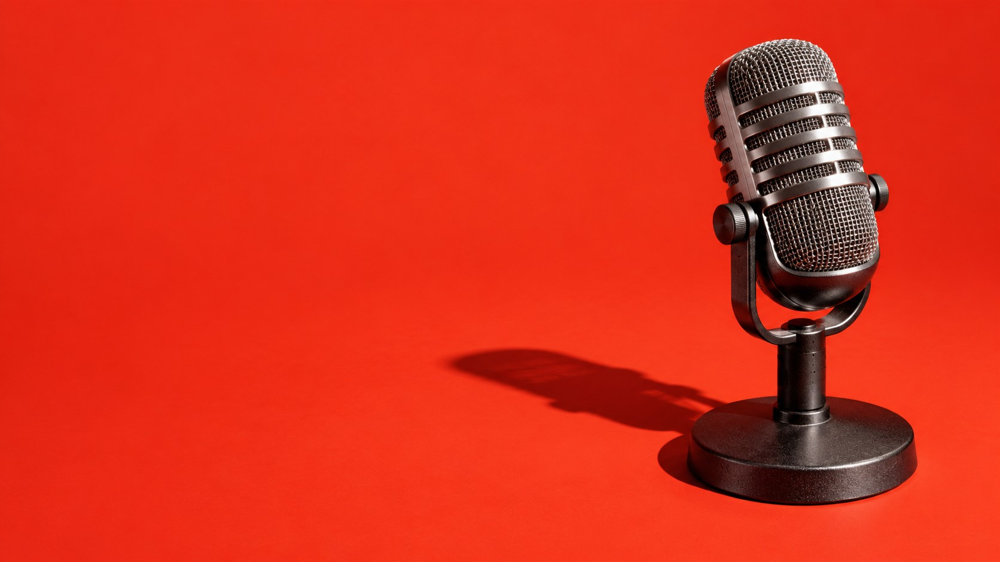
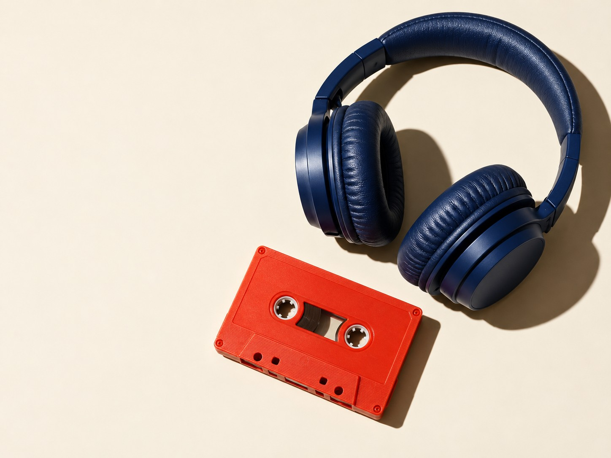
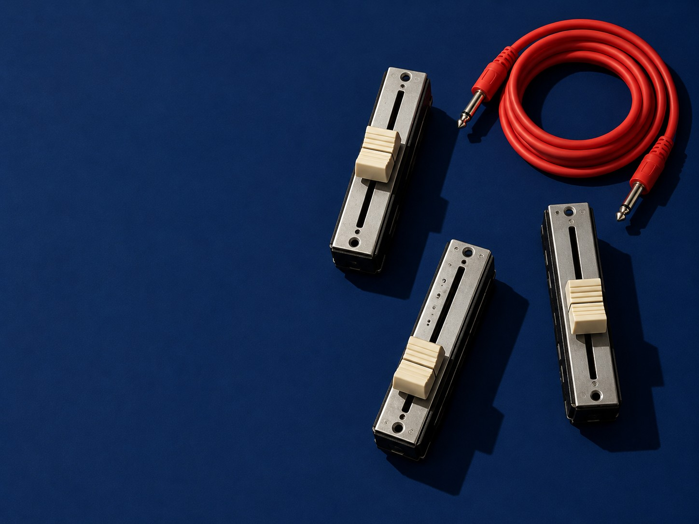

Pilot
Six weeks · one-offfrom£4,800
- Written format and running order
- Host rehearsal with notes
- Recording, edit and mix
- Artwork, trailer, show notes and clips
- Launch on the podcast apps

00:00 Cold open · podcast production, Manchester
A four-person studio that takes founders and companies from the first recording to a launched show.
00:45 The pitch
The idea in one line, the segments, the running time and the host’s job. Written down before anyone records.
Rehearsal and honest notes, so the person at the microphone sounds like themselves on a good day.
Recorded in our Manchester studio or on location, edited for pace and mixed for earbuds and car speakers.
Artwork, trailer, show notes and clips, released on the day you pick.

02:10 The pilot
Six weeks from a blank page to a launched show. We write the format, rehearse the host, record, edit, package and put it live.
For a founder or a company starting from nothing, or from a few recordings that never went anywhere.
Read the six weeks04:30 Running order
The pilot runs to a running order, like any show. You know what happens each week, and what we need from you.
We find the show: the one-line idea, who it’s for, the segments and the running time. You sign off a written format.
A practice recording with the host, then notes on pace, warmth and the habits to drop. Nobody else hears this one.
The first episodes, in our Manchester studio or on location with portable kit. Guests get a one-page brief beforehand.
We cut for pace, clean up the room and mix for earbuds. You hear every cut before it’s final.
Artwork, a trailer, show notes and short clips for social, all written in the show’s voice.
The show goes live on the podcast apps on the day you choose, with a plan for what happens after episode one.

07:00 The season
Once the show is live, we keep it on air. Guests booked, episodes recorded, edited, mixed and released, every month.
09:15 Rate card
Prices are starting points in pounds, before VAT. The format call is where we work out yours.
from£4,800
from£2,200a month
11:00 On air soon
On Air is new, so there are no client shows, quotes or listener numbers to show yet. These slots stay empty until there are.
12:30 Format call
Free, with the producer who’d make your show. Bring the idea, or just the reason you want a podcast. Leave with a format you could pitch to your team.
No. We bring the microphones to you, or you come to the studio. You need a quiet room and something to say.
You do: the name, the feed, the audio files and the artwork.
No. Some shows work better with a colleague or a guest host. We’ll work out who on the call.
Either you run the show yourselves from our format, or it moves onto a Season and we keep it on air.
No. On Air is fictional, made for a design gallery. The prices and process are examples, and the form sends nothing.
14:00 Sign-off
The format call is the first take. If there’s a show in it, we’ll tell you how we’d make it. If there isn’t, we’ll say so.
Book a free format call